5 Other figures
This final chapter presents a range of other figures and charts that may help with improving the display of key information on the website.
5.1 Gradient density plots for interactive maps
The maps presented on the webpage do not include any representation of uncertainty. One way of including that information without having to add additional (layers to the) maps would be to build on the interactive functions included so far and present a probability distribution for the given region and year. This could be displayed in the same box that currently appears when hovering over an area and displays area name and average indicator value.
To make these density plots, we use the previously simulated bootstrap samples, using Jerv as an example:
i <- "Jerv"
bootStrp <- readRDS(paste0("data/", i, "_bootstrapped_scaled.rds"))
head(bootStrp)
#> # A tibble: 6 x 4
#> ICunitID ICunitName year scaledIndicator
#> <chr> <chr> <chr> <dbl>
#> 1 1302 Rovviltregion 8 1990 0.194
#> 2 1302 Rovviltregion 8 1990 0.233
#> 3 1302 Rovviltregion 8 1990 0.190
#> 4 1302 Rovviltregion 8 1990 0.207
#> 5 1302 Rovviltregion 8 1990 0.199
#> 6 1302 Rovviltregion 8 1990 0.164We have considered forcing all indicator values > 1 to display as 1, but this messes up when plotting density functions. Still, this conversion is required for calculating the point estimate (median) and we therefore make a copy of the data in which no values are larger than 1.
bootStrp1 <- bootStrp
bootStrp1$scaledIndicator[which(bootStrp1$scaledIndicator > 1)] <- 1Next, we need to manually calculate the probability densities for the indicator values in each year and area. This is necessary for making density plots with a color gradient fill (but see further below for an alternative using the “ggridges” package which does not require this intermediate step).
years <- unique(bootStrp$year)
areas <- unique(bootStrp$ICunitName)
pDens <- data.frame()
for(t in years){
for(a in areas){
bootStrp_sub <- subset(bootStrp, year == t & ICunitName == a)
pDens_a_t <- data.frame(
ICunitName = a,
year = t,
x = density(bootStrp_sub$scaledIndicator)$x,
y = density(bootStrp_sub$scaledIndicator)$y
)
pDens <- rbind(pDens, pDens_a_t)
}
}We can then proceed to plotting the probability density functions with a color gradient under the line:
# Set maximum value (we will not plot beyond 4)
for(t in years){
# Take data subsets for a given year
bootStrp_yr <- bootStrp[which(bootStrp$year == t),]
bootStrp1_yr <- bootStrp1[which(bootStrp1$year == t),]
pDens_yr <- pDens[which(pDens$year == t),]
# Extract distribution medians
sum_values <- bootStrp1_yr %>%
group_by(ICunitName) %>%
summarise(sumStat = median(scaledIndicator))
# Set maximum plotting value (never > 5) and mapping for custom color scale
maxVal <- ifelse(max(pDens_yr$x) > 5, 5, max(pDens_yr$x))
if(maxVal < 1+1/9){
valuesMap <- c(-0.1, seq(0, 1, length.out = 10))
colorMap <- c("#1F8C81", NIviz_colours$IndMap_cols)
}else{
valuesMap <- c(-0.1, c(seq(0, 1, length.out = 10), maxVal)/maxVal)
colorMap <- c("#1F8C81", NIviz_colours$IndMap_cols, "#4B4BAF")
}
# Plot densities
print(
ggplot(subset(pDens_yr, x <= maxVal), aes(x, y)) +
geom_segment(aes(xend = x, yend = 0, colour = x)) +
#scale_color_NIviz_c(name = "IndMap_cols") +
scale_colour_gradientn(colours = colorMap,
values = valuesMap,
limits = c(-0.01, ifelse(maxVal < 1, 1, maxVal))) +
ggtitle(paste0(i, " (", t, ")")) +
xlab("Value") +
geom_vline(data = sum_values, aes(xintercept = sumStat)) +
facet_wrap(~ ICunitName, scales = 'free') +
theme_classic() +
theme(strip.background = element_blank(),
legend.title = element_blank(),
axis.line.y = element_blank(), axis.ticks.y = element_blank(),
axis.text.y = element_blank(), axis.title.y = element_blank())
)
}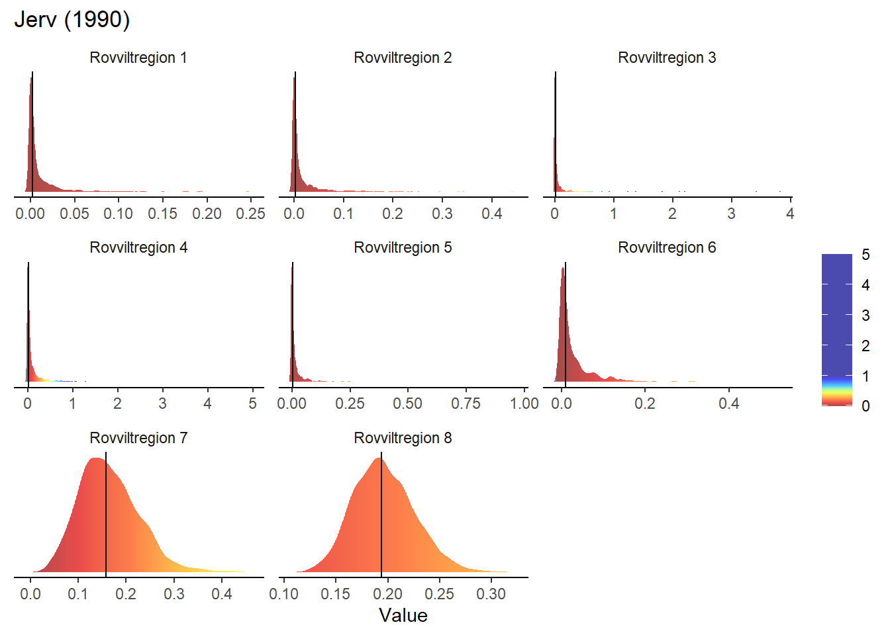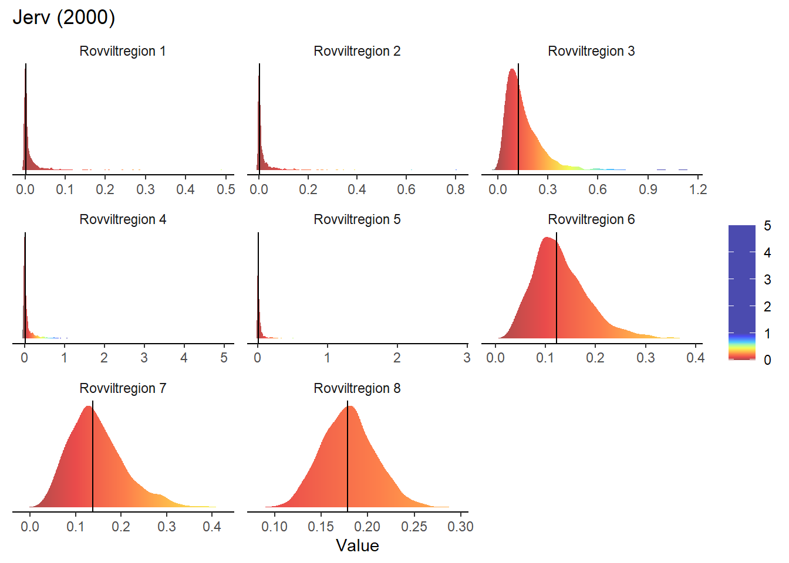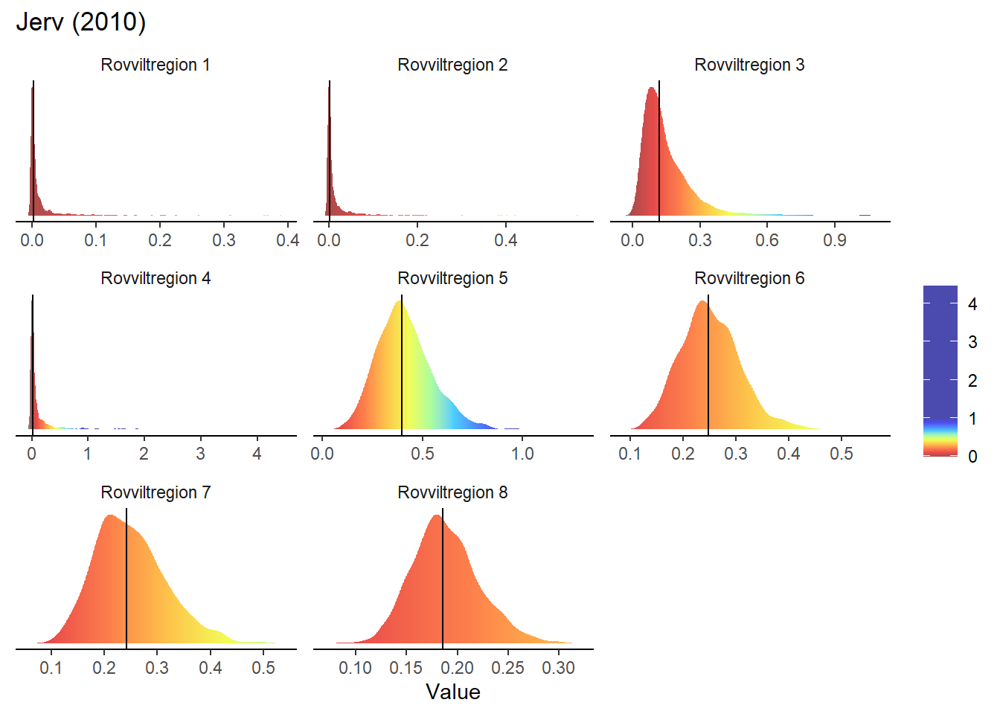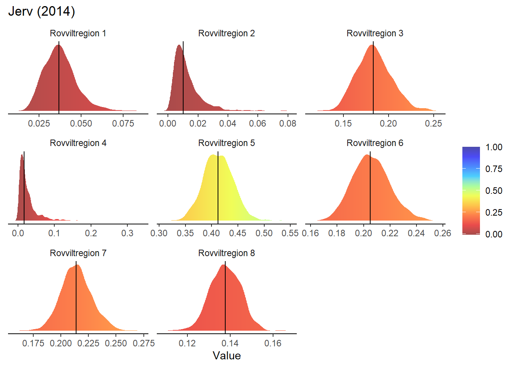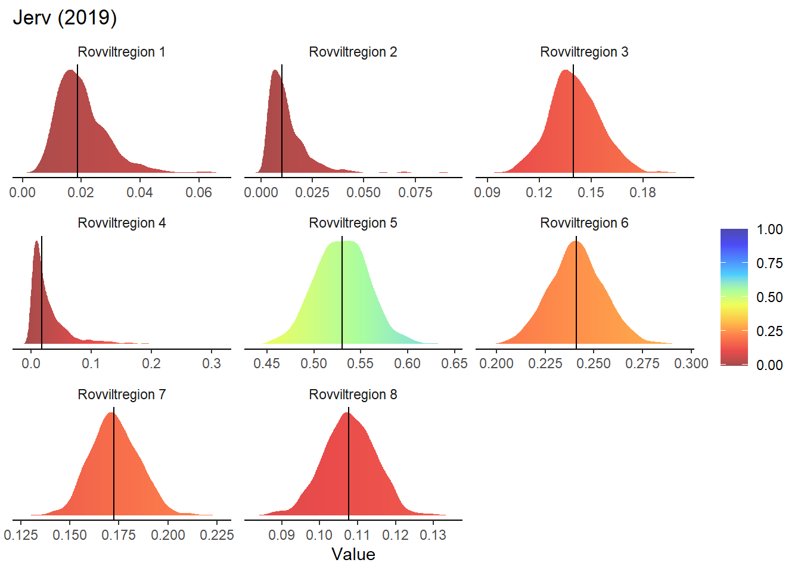
Gradient density plots might also be useful for other types of visualization of indicator and index data. For example, there is a very attractive way of using ridgeplots for visualizing time series inclusing uncertainty. Could look something like this:
for(a in areas){
# Take data subsets for a given area
bootStrp_ar <- bootStrp[which(bootStrp$ICunitName == a),]
pDens_ar <- pDens[which(pDens$ICunitName == a),]
# Set maximum plotting value (never > 5) and mapping for custom color scale
maxVal <- ifelse(max(pDens_ar$x) > 5, 5, max(pDens_ar$x))
if(maxVal < 1+1/9){
valuesMap <- c(-0.1, seq(0, 1, length.out = 10))
colorMap <- c("#1F8C81", NIviz_colours$IndMap_cols)
}else{
valuesMap <- c(-0.1, c(seq(0, 1, length.out = 10), maxVal)/maxVal)
colorMap <- c("#1F8C81", NIviz_colours$IndMap_cols, "#4B4BAF")
}
# Plot densities
print(
ggplot(subset(bootStrp_ar, scaledIndicator <= maxVal), aes(x = scaledIndicator, y = year, fill = stat(x))) +
geom_density_ridges_gradient(scale = 5, rel_min_height = 0.01, quantile_lines = TRUE, quantiles = 2) +
scale_fill_gradientn(colours = colorMap,
values = valuesMap,
limits = c(-0.02, ifelse(maxVal < 1, 1, maxVal))) +
ggtitle(paste0(i, " (", a, ")")) +
xlab("Scaled indicator value") + ylab("") +
theme_classic() +
theme(legend.title = element_blank(), plot.title = element_text(hjust = 0.5),
axis.line.y = element_blank(), axis.ticks.y = element_blank(),
panel.grid.major.y = element_line(color = "grey80"))
)
}
#> Warning: `stat(x)` was deprecated in ggplot2 3.4.0.
#> i Please use `after_stat(x)` instead.
#> Picking joint bandwidth of 0.00457
#> Warning: Using the `size` aesthietic with geom_segment was
#> deprecated in ggplot2 3.4.0.
#> i Please use the `linewidth` aesthetic instead.#> Picking joint bandwidth of 0.00947#> Picking joint bandwidth of 0.00715#> Picking joint bandwidth of 0.00184#> Picking joint bandwidth of 0.00215#> Picking joint bandwidth of 0.0101#> Picking joint bandwidth of 0.00966#> Picking joint bandwidth of 0.01125.2 Ecosystem fidelity
All indicators are assigned to at least one ecosystem, but a fair number of them are assigned to multiple ecosystems by means of proportions. Wolverine (Jerv), for example, is assigned with 25% to forest and and 75% to mountain. This basic information could easily be displayed on each indicator’s page on naturindeks.no.
The relevant information is found in the assembled indicator data under $indicators:
i <- "jerv"
indexData <- readRDS(paste0("data/", i, "_assemebled.rds"))
str(indexData$indicators)
#> 'data.frame': 1 obs. of 9 variables:
#> $ id : num 88
#> $ name : chr "Jerv"
#> $ keyElement : logi FALSE
#> $ functionalGroup : chr "Topp-predator generalist"
#> $ functionalGroupId: num 8
#> $ scalingModel : chr "Low"
#> $ scalingModelId : num 1
#> $ Fjell : num 75
#> $ Skog : num 25Any ecosystem type relevant to a specific indicator appears as a separate column in this dataframe, and contains a value representing the % fidelity to that ecosystem type.
Using separately stored information on available ecosystem types, we can assemble this data for all of our example indicators:
# Load ecosystem info
EcoSysInfo <- readRDS("data/EcosystemInfo.rds")
# Indicator list
indicator <- c("Dikesoldogg",
"Jerv",
"Elg",
"Lomvi",
"Havørn",
"Lange")
# Assemble fidelity data
fidData <- data.frame()
for(i in 1:length(indicator)){
indexData <- readRDS(paste0("data/", indicator[i], "_assemebled.rds"))
ColIdx <- which(names(indexData$indicators) %in% EcoSysInfo$ecosystem)
fidDataI <- data.frame(
indicator = indicator[i],
ecosystem = names(indexData$indicators)[ColIdx],
fidelity = unname(as.numeric(indexData$indicators[,ColIdx])))
fidData <- rbind(fidData, fidDataI)
}This gives us a dataframe with all indicators and their fidelity to different ecosystems:
print(fidData)
#> indicator ecosystem fidelity
#> 1 Dikesoldogg Våtmark 100
#> 2 Jerv Fjell 75
#> 3 Jerv Skog 25
#> 4 Elg Skog 100
#> 5 Lomvi Hav-pelagisk 67
#> 6 Lomvi Kystvann-pelagisk 33
#> 7 Havørn Kystvann-pelagisk 100
#> 8 Lange Havbunn 80
#> 9 Lange Kystvann-bunn 20Before plotting, we match the integer ecosystem IDs to make sure the colour mapping works correctly:
fidData <- merge(fidData, EcoSysInfo, all.x = TRUE)Next, we’ll visualize this information for each indicator by means of pie charts.
EcoSys_cols <- NIviz_colours$EcoSys_cols[1:11]
names(EcoSys_cols) <- EcoSysInfo$ecosystem
for(i in 1:length(indicator)){
sub_fidData <- fidData[which(fidData$indicator == indicator[i]),]
print(
ggplot(sub_fidData, aes(x = "", y = fidelity, fill = fct_inorder(ecosystem))) +
ggtitle(indicator[i]) +
geom_bar(stat = "identity") +
geom_text(aes(label = paste0(fidelity, "%")),
position = position_stack(vjust = 0.5)) +
coord_polar(theta = "y") +
scale_fill_manual(name = "Økosystem", values = EcoSys_cols[which(names(EcoSys_cols) %in% sub_fidData$ecosystem)]) +
theme_void()
)
}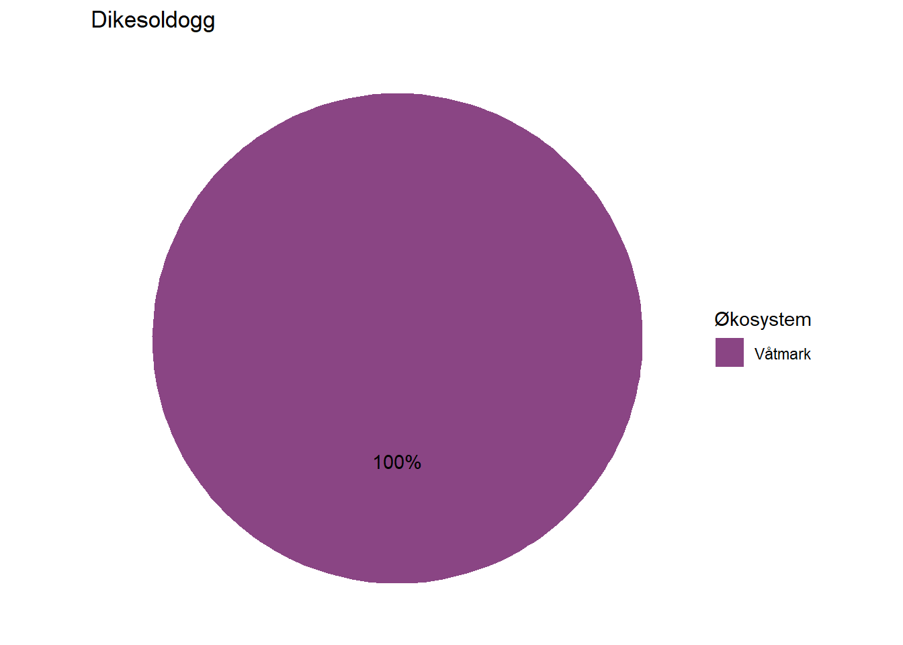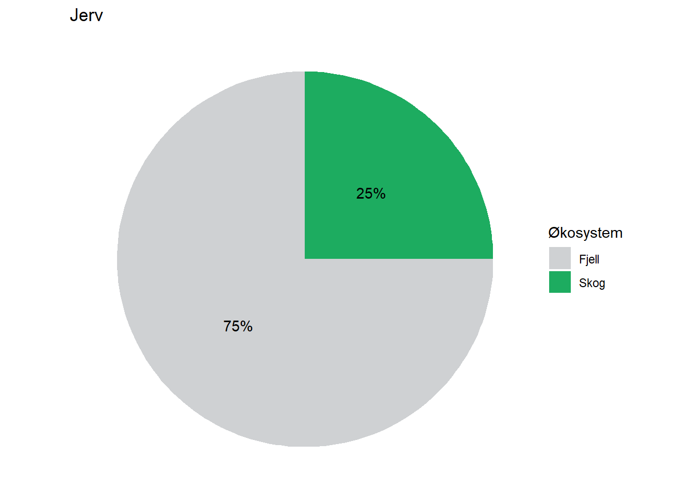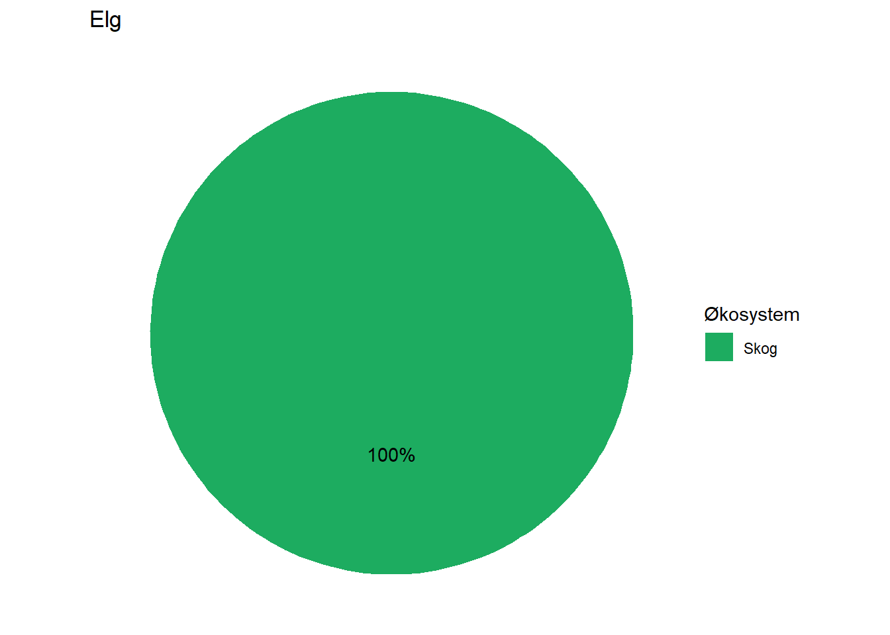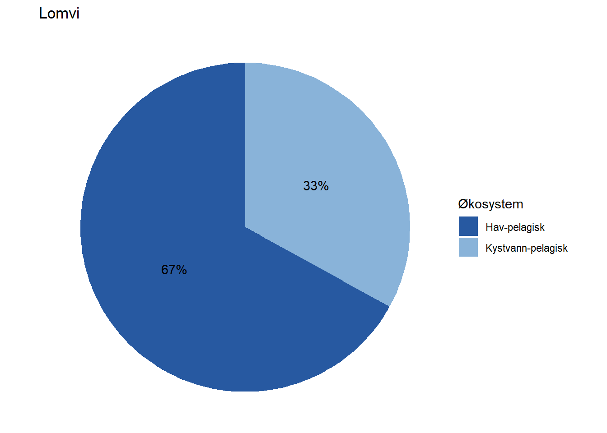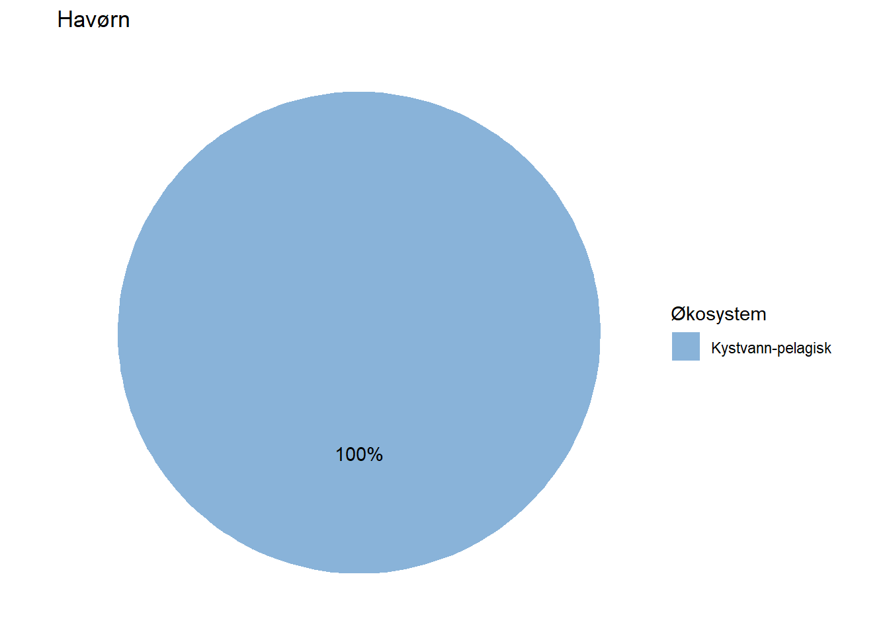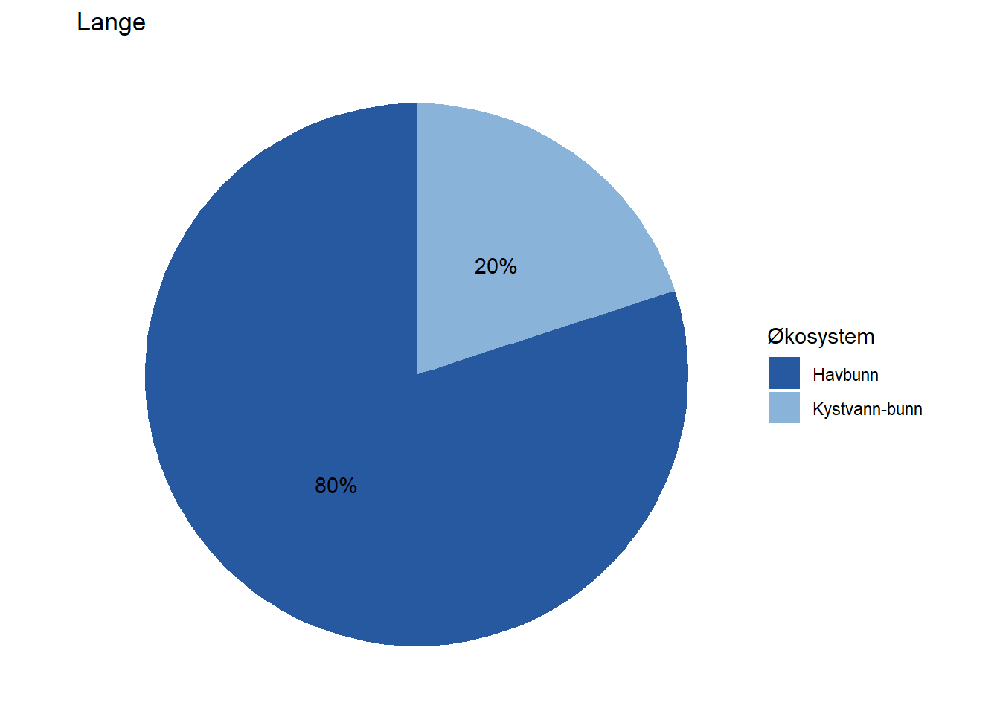 Depending on how large these pie charts should appear on the website in the end, it may be necessary to move the percentage labels outside the pies. Doing that is a bit more cumbersome, but works with the code below unless the indicator belongs 100 % to one dataset. When that is the case, the solution below does not print the percentage label at all (see indicator Lange) and we have not figured out how to fix that yet.
for(i in 1:length(indicator)){
sub_fidData <- fidData[which(fidData$indicator == indicator[i]),]
posData <- sub_fidData %>%
mutate(csum = rev(cumsum(rev(fidelity))),
pos = fidelity/2 + lead(csum, 1),
pos = if_else(is.na(pos), fidelity/2, pos))
print(
ggplot(sub_fidData, aes(x = "", y = fidelity, fill = ecosystem)) +
ggtitle(indicator[i]) +
geom_bar(stat = "identity") +
coord_polar(theta = "y") +
#scale_fill_manual(values = EcoSys_cols) +
scale_fill_manual(name = "Økosystem", values = EcoSys_cols[which(names(EcoSys_cols) %in% sub_fidData$ecosystem)]) +
scale_y_continuous(breaks = posData$pos, labels = paste0(sub_fidData$fidelity, "%")) +
theme(axis.ticks = element_blank(),
axis.title = element_blank(),
axis.text = element_text(size = 15),
panel.background = element_rect(fill = "white"))
)
}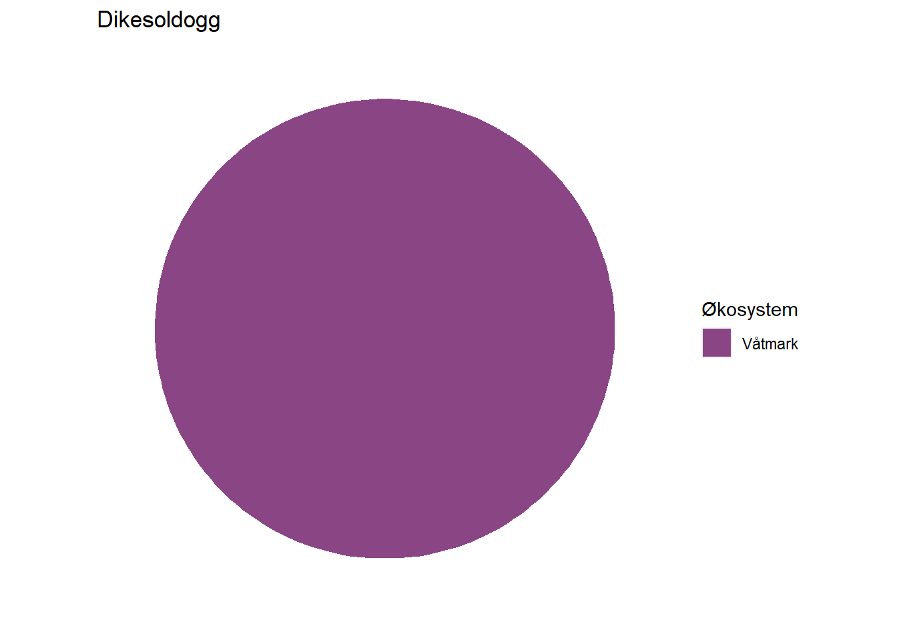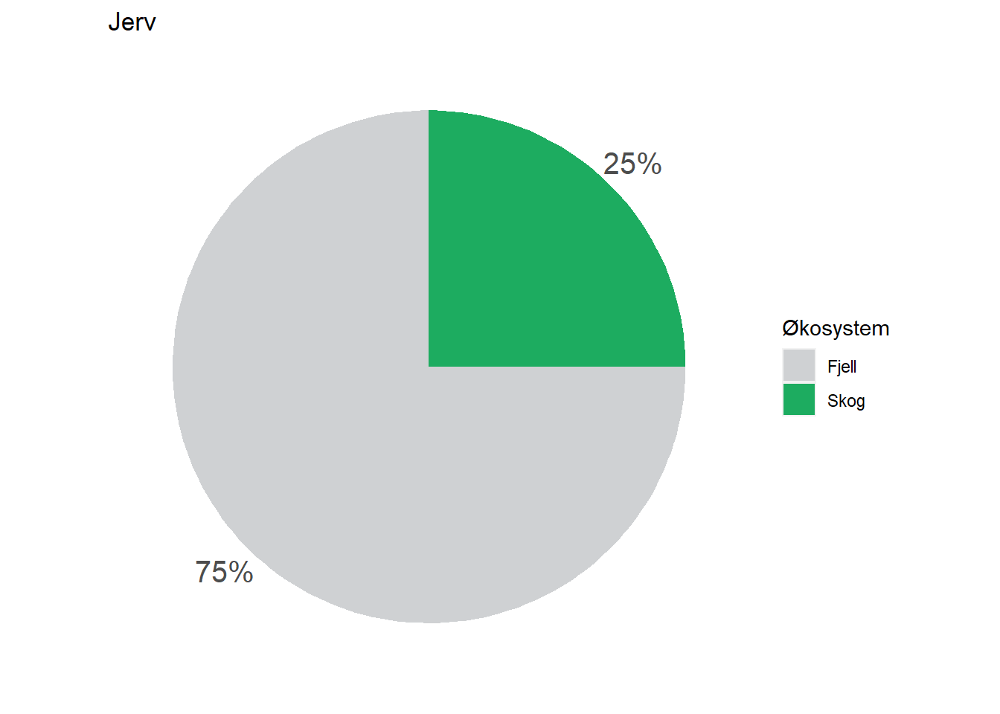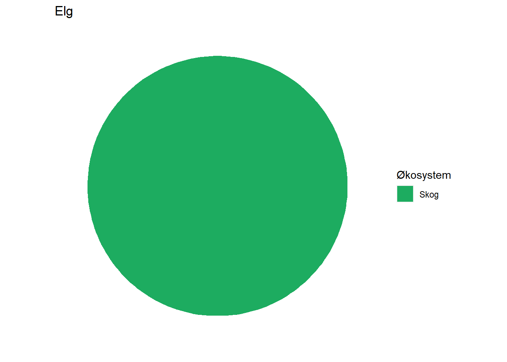 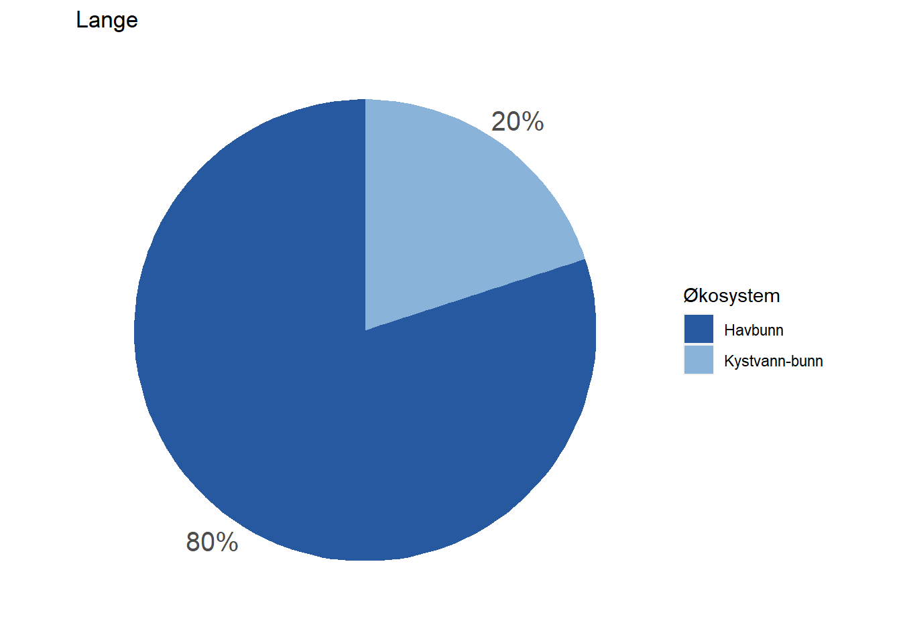
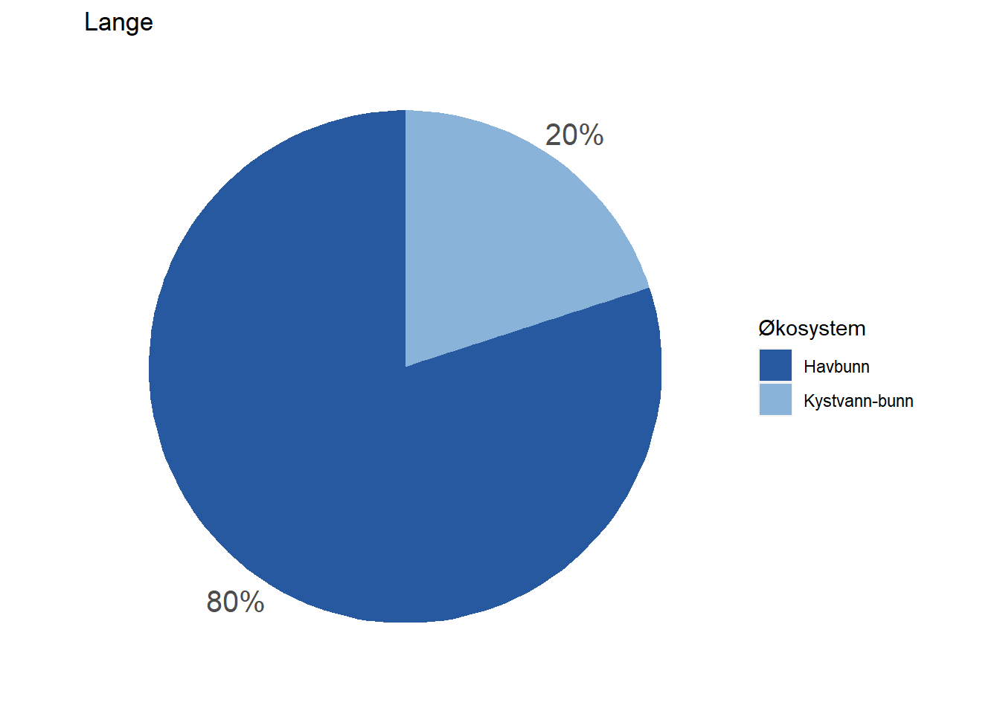
5.3 Impact factor wordclouds
library(wordcloud)
library(NIcalc)
library(wordcloud2)
library(RColorBrewer)
library(readxl)
library(dplyr)
library(tm)As per now, the website shows the most important impact factors for each indicator as a list in a pop-up window on the top-right. This is information that is likely of great interest to the general public, and would benefit from being placed more visible on the website and in a more engaging way than as a list. One attractive alternative way of presenting is via wordclouds.
The following wordcloud figures show the pressure factors for each indicator, where both the color saturation and text size represent the importance of each pressure factor. Small text size and low saturation means low importance, while large text size represent pressure factors with high importance to the indicator.
# Load dataset
pressure = read_excel("P:/41201612_naturindeks_2021_2023_database_og_innsynslosning/Pilot_Forbedring_Innsynsløsning/R/Indikator_paavirkning.xlsx")
# Filter for species of interest
pressure = pressure %>% filter(navn_norsk == "Elg" | navn_norsk == "Dikesoldogg" | navn_norsk == "Havørn" | navn_norsk == "Lange" | navn_norsk == "Jerv" | navn_norsk == "Lomvi") # NB - Jerv was not included in the provided excel file
pressure = arrange(pressure, by = navn_norsk)
pressure = pressure %>% rename(PressureFactor = Paavirkningsfaktor, PressureValue = FK_PaavirkningsverdiID)
# Remove all instances of "Ikke rel/ukjent" category" and increase the value of pressure factors for better contrast in wordcloud figures
pressure = pressure %>% filter(PressureValue != 7) %>% mutate(PressureValue = PressureValue*2)
# Create separate datasets for the different species
dikesoldogg = pressure %>% filter(navn_norsk == "Dikesoldogg") %>% dplyr::select(PressureFactor, PressureValue)
elg = pressure %>% filter(navn_norsk == "Elg") %>% dplyr::select(PressureFactor, PressureValue)
havørn = pressure %>% filter(navn_norsk == "Havørn") %>% dplyr::select(PressureFactor, PressureValue)
lange = pressure %>% filter(navn_norsk == "Lange") %>% dplyr::select(PressureFactor, PressureValue)
lomvi = pressure %>% filter(navn_norsk == "Lomvi") %>% dplyr::select(PressureFactor, PressureValue)
# Create a custom color gradient (green in this case)
pressureColors = c("#bde4aa", "#addb9d", "#9cd28f", "#8cc982", "#7dc275", "#6cb967", "#5db15a", "#50a54e", "#479845", "#3f8c3b", "#367e31", "#2e7228", "#25661f") 5.3.1 Dikesoldogg (oblong-leaved sundew)
# Dikesoldogg
wordcloud(words = dikesoldogg$PressureFactor, freq = dikesoldogg$PressureValue, min.freq = 1, max.words = 200, random.order = FALSE, rot.per = 0.35, colors = pressureColors, scale = c(1.5, 0.5)) # use rot.per to set the percentage of words that are at a 90 degree angle
5.3.2 Elg (Moose)
wordcloud(words = elg$PressureFactor, freq = elg$PressureValue, min.freq = 1, max.words = 200, random.order = FALSE, rot.per = 0.35, colors = pressureColors, scale = c(1.5, 0.5))
5.3.3 Havørn (White-tailed eagle)
wordcloud(words = havørn$PressureFactor, freq = havørn$PressureValue, min.freq = 1, max.words = 200, random.order = FALSE, rot.per = 0.35, colors = pressureColors, scale = c(1.5, 0.5))


5.4 Data type
For data type, pie charts can also be a good option for visualization. The same would also hold for other pieces of key information that are not currently displayed, such as the proportion of imputed data points.
source("R/colorPalettes.R")
#Elg datatyper
data <- data.frame(
category=c("Ekspert",
"Modeller",
"Overvåkning"),
count=c(4.9, 95.1, 0)
)
# load library
library(tidyverse)
# Compute percentages
data$fraction <- data$count / sum(data$count)
# Compute the cumulative percentages (top of each rectangle)
data$ymax <- cumsum(data$fraction)
# Compute the bottom of each rectangle
data$ymin <- c(0, head(data$ymax, n=-1))
# Compute label position
data$labelPosition <- (data$ymax + data$ymin) / 2
data$labelPosition[3]<-0.8
# Compute a good label
data$label <- paste0(data$category, "\n ", data$count, " %")
library(ggrepel)
#> Warning: package 'ggrepel' was built under R version 4.1.3
# Make the plot
ggplot(data, aes(ymax=ymax, ymin=ymin, xmax=4, xmin=3, fill=category)) +
geom_rect() +
geom_text(x=2, aes(y=labelPosition, label=label, color=category), size=2.5) + # x here controls label position (inner / outer)
scale_fill_NIviz_d("IndMap_cols") +
scale_colour_NIviz_d("IndMap_cols") +
coord_polar(theta="y") +
xlim(c(-1, 4)) +
theme_void() +
theme(legend.position = "none")5.5 Weights
Finally, today’s website also does not present the indicator- or area-weights, even though they are absolutely central in the calculation of spatially aggregated indicators and indices. Visualization of indicator weights for indices (Nature Index for different ecosystems and thematic indices) are routinely made during the updating of the Nature Index and can be found in the reports (e.g. Figure 5.1). It might also be worth considering to make information on weighting at different levels available. This could, for example, include the area weights applied when making both composite indices and averaged indicators, or the weights given to any specific indicator in the Nature Index for different ecosystems and for different thematic indices.
Figure 5.1: Indicator weights for the Nature Index for mountains, as presented in the Nature Index report.